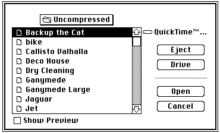
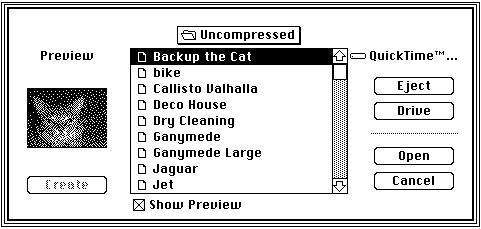
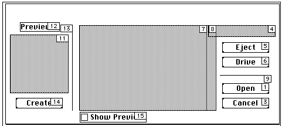
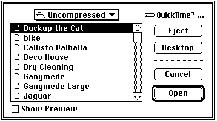
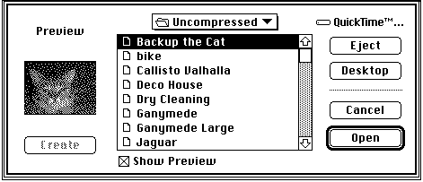
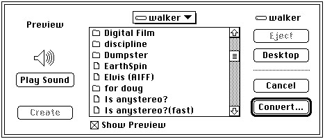
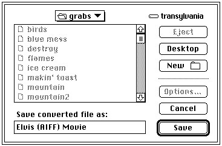
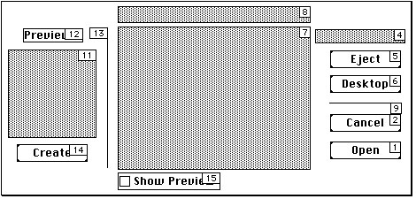

Previewing Files
QuickTime includes extensions to the Standard File Package that allow you to create and display file previews--information that gives the user an idea of a file's contents without opening the file. Typically, a file's preview is a small PICT image (called a thumbnail), but previews may also contain other types of information that is appropriate to the type of file being considered. For example, a text file's preview might tell the user when the file was created and what it discusses. You can use the Image Compression Manager to create thumbnail images--see the chapter "Image Compression Manager" later in this book for more information about thumbnail images.QuickTime provides new standard file functions that your application can use to display a file's preview during the Open dialog box. These functions allow your application to support previews automatically.
In addition, the Movie Toolbox includes two functions that allow you to create a preview for a file.
- Note
- Before using these new standard file functions, make sure that the Image Compression Manager is installed. See the chapter "Image Compression Manager" in this book for information about the Image
Compression Manager's Gestalt selector.Previewing Files in System 6 Using Standard File Reply Structures
The Movie Toolbox provides two new standard file functions that allow you to display file previews in an Open dialog box in System 6 using standard file reply structures:SFGetFilePreviewandSFPGetFilePreview. TheSFGetFilePreviewfunction (described on page 2-287) corresponds to the existingSFGetFilefunction;
theSFPGetFilePreviewfunction (described on page 2-289) corresponds to the existingSFPGetFilefunction. Both of these new functions take the same parameters as their existing counterparts. For information aboutSFGetFileandSFPGetFile, see Inside Macintosh: Files.The
- IMPORTANT
- All the functions for previewing files are present in System 6 except the
CustomGetFilePreviewfunction. TheStandardGetFilePreviewfunction is preferable and will work on System 6.SFGetFilePreviewfunction uses the dialog box shown in Figure 2-33. TheSFPGetFilePreviewfunction can also use this dialog box, if you do not supply your own.Figure 2-33
SFGetFilePrevieworSFPGetFilePreviewdialog box without preview
You use these new functions in place of the existing standard file functions to indicate whether or not you want to allow the user to display previews during the Open dialog box. The user displays a file's preview by selecting a file in the dialog box and clicking Show Preview. When the user does so, the functions display the preview for the file,
as shown in Figure 2-34.Figure 2-34
SFGetFilePrevieworSFPGetFilePreviewdialog box with preview
The preview area of the dialog box is displayed whenever previewing is enabled.
Customizing Your Interface in System 6
If your application requires it, you can customize the user interface for identifying files. TheSFGetFilePreviewfunction does not allow you to use a custom dialog box by creating your own dialog template resource. However, theSFPGetFilePreviewfunction does let you access a custom dialog box of any resource type with thedlgIDparameter.Figure 2-35 shows the standard dialog box used by
SFPGetFilePreviewandSFGetFilePreview. Your dialog box and dialog filter function must support at least these dialog items.Figure 2-35 Standard preview dialog box for
- Note
- Alter the dialog boxes only if necessary. Apple does not guarantee future compatibility if you use a customized dialog box.
SFGetFilePreviewandSFPGetFilePreview
Items to the left of item 13 are visible only when previewing. If you want to define items that are visible only during a file preview, place them to the left of item 13 in your custom dialog box.
If your application defines a custom dialog box, be sure to include the following items in your dialog box definition:
enum { /* dialog items to include in dialog box definition for use with SFPGetFilePreview function */ sfpItemPreviewAreaUser = 11, /* user preview area */ sfpItemPreviewStaticText = 12, /* static text preview */ sfpItemPreviewDividerUser = 13, /* user divider preview */ sfpItemCreatePreviewButton = 14, /* create preview button */ sfpItemShowPreviewButton = 15 /* show preview button */ };Previewing Files in System 7 Using Standard File Reply Structures
The Movie Toolbox provides two new standard file functions,standardGetFilePreviewandCustomGetFilePreview, that allow you to display file previews in an Open dialog box in System 7 using standard file reply structures (of typeStandardFileReply). TheStandardGetFilePreviewfunction (described on page 2-291) corresponds to the existingStandardGetFilefunction; theCustomGetFilePreviewfunction (described on page 2-293) corresponds to the existingCustomGetFilefunction. Both of these new functions take the same parameters as their existing counterparts. See Inside Macintosh: Files for information aboutStandardGetFileandCustomGetFile.The
StandardGetFilePreviewfunction uses the dialog box shown in
Figure 2-36. TheCustomGetFilePreviewfunction can also use this dialog box, if you do not supply your own.Figure 2-36
StandardGetFilePrevieworCustomGetFilePreviewdialog box without preview
You use these new functions in place of the existing standard file functions
whenever you want to allow the user to display previews during the Open dialog box. The user causes a file's preview to be displayed by selecting a file in the dialog box and clicking Show Preview. When the user does so, the functions display the preview for the file, as shown in Figure 2-37.Figure 2-37
StandardGetFilePrevieworCustomGetFilePreviewdialog box with preview
The preview portion of the dialog box is displayed only when the dialog box is showing a file's preview.
The
SFGetFilePreview,SFPGetFilePreview,StandardGetFilePreview, andCustomGetFilePreviewfunctions allow the user to automatically convert files to movies if your application requests movies. If there is a file that can be converted into
a movie file using a movie import component, then the file is shown in the Standard File dialog box in addition to any movies. When the user selects the file, the Open button changes to a Convert button. Figure 2-38 provides an example of this dialog box.Figure 2-38 Dialog box showing automatic file-to-movie conversion option

Choosing Convert displays a dialog box that allows the user to choose where the converted file should be saved. Figure 2-39 shows this dialog box.
Figure 2-39 Dialog box for saving a movie converted from a file

When conversion is complete, the converted file is returned to the calling application as the movie that the user chose. If you want to disable automatic file conversion in your application, you must write a file filter function and pass it to the file preview display function you are using. Your file filter function must call the File Manager's
FSpGetFileInfofunction on each file that is passed to it to determine its actual file type. If the File System parameter block pointer passed to your file filter function indicates that the file type is'MooV', and the actual type returned byFSpGetFileInfois not'MooV', then the file filter function will convert this file. If you do not wish a file to be displayed as a candidate for conversion, your file filter function should return a value oftruewhen it is called for that file.See "File Filter Functions" beginning on page 2-338 for comprehensive details on the interaction of application-defined file filter functions with the file preview display functions. For information on
FSpGetFileInfo, see Inside Macintosh: Files.Customizing Your Interface in System 7
If your application requires it, you can customize the user interface for identifying files. TheCustomGetFilePreviewfunction allows you to specify a custom dialog box of any resource type with thedlgIDparameter.Figure 2-40 shows the standard dialog box used by
CustomGetFilePreview. Your dialog box and dialog filter function must support at least these dialog items.Figure 2-40 Standard preview dialog box for
- Note
- Alter the dialog boxes only if necessary. Apple does not guarantee future compatibility if you use a customized dialog box.
CustomGetFilePreview
Items to the left of item 13 are visible only when previewing. If you want to define items that are visible only during a file preview, place them to the left of item 13 in your custom dialog box.
If your application defines a custom dialog box, be sure to include the following items in your dialog box definition:
enum { /* dialog items to include in dialog box definition */ sfpItemPreviewAreaUser = 11, /* user preview area */ sfpItemPreviewStaticText = 12, /* static text preview */ sfpItemPreviewDividerUser = 13, /* user divider preview */ sfpItemCreatePreviewButton = 14, /* create preview button */ sfpItemShowPreviewButton = 15 /* show preview button */ };